Префектура Сига · Оцу · искусство
Музей искусств префектуры Сига: Юки Огура, Ротко и древние свитки под одной крышей
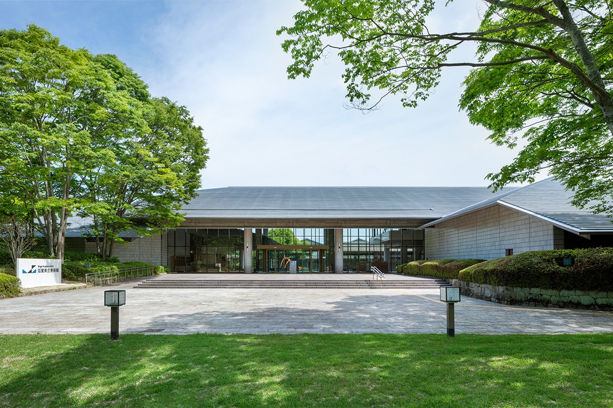
Музей искусств префектуры Сига невелик, но в нескольких областях его собрание считается лучшим в Японии. В 2021 году, после ремонта, он открылся заново с новым именем и новой задачей: стать местом, связанным со своим краем.
Музей
Небольшое собрание, первое в стране
Музей открылся в 1984 году в Оцу, столице префектуры, и до ремонта назывался Музеем современного искусства префектуры Сига. После временного закрытия на реконструкцию он принял гостей 27 июня 2021 года уже как Музей искусств префектуры Сига.
По меркам префектурных музеев собрание скромное: на март 2021 года в нём было 1809 единиц хранения. Зато работы художницы Юки Огуры (1895–2000), мастера живописи нихонга в японской традиции, и мастера крашения и ткачества Фукуми Симуры представлены здесь полнее, чем где-либо в стране. Музей известен и сильными вещами Марка Ротко и Роберта Раушенберга, главных имён американского искусства после Второй мировой войны. С 2016 года он собирает ещё и ар-брют, искусство художников-самоучек.
Не меньше музей гордится просветительской работой. Мастер-классы для посетителей здесь проводят с самого открытия, а для того чтобы учить смотреть на искусство, придумали специальные игры. Такой подход считают в Японии образцовым.
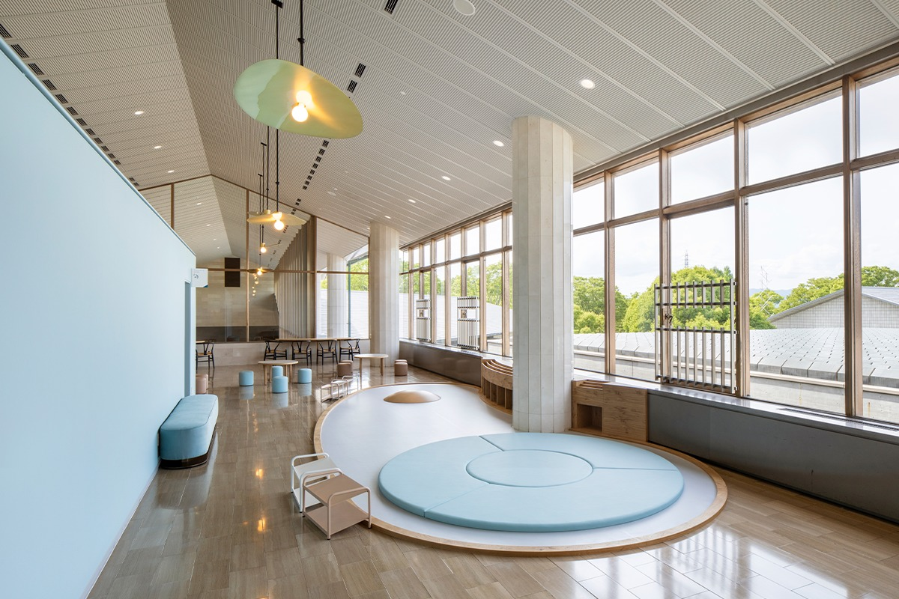
Идея
Четыре слова, из которых складывается CALL
Обновлённый музей строит работу на четырёх опорах: «создание», «вопрос», «край» и «учёба». По первым буквам английских слов программа называется CALL.
«Создание» означает поддержку творчества в Сиге и вокруг неё, независимо от того, есть ли у автора инвалидность, и с вниманием к равновесию между мужчинами и женщинами. «Вопрос» связан с выставками: они должны подталкивать к размышлению о том, что же такое искусство для человека. Сюда же относится и собрание, которое музей хочет сделать ещё более необычным.
«Край» означает изучение Сиги вместе с местными жителями, компаниями и организациями, чтобы о разнообразии префектуры узнало как можно больше людей и каждый мог сказать: «А в Сиге интересно!» «Учёба» относится к программам для всех, от детей до взрослых и от новичков до учёных, прежде всего для жителей префектуры.
Опираясь на эти четыре слова, музей рассчитывает меняться вместе с обществом и оставаться «всегда свежим». Эту модель он хочет предложить и другим музеям страны.
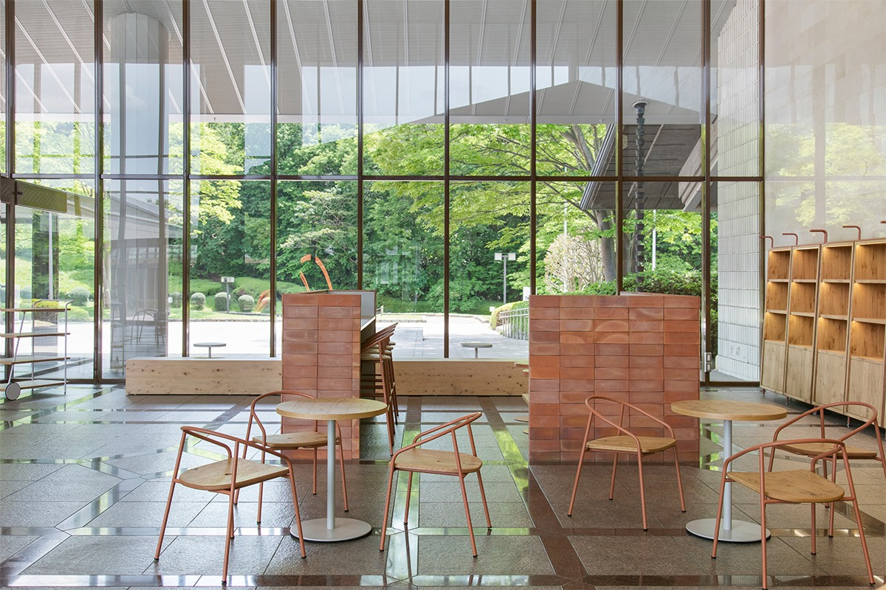
Вход и вестибюль с прилегающими пространствами оформили в едином стиле и назвали «зоной встречи»: здесь музей знакомится с гостями, а гости друг с другом. Это хорошее место, чтобы задержаться после осмотра залов.
Коллекция
Искусство, которое нужно открыть
В японском искусстве много свитков, вертикальных и горизонтальных, и складных ширм. Чтобы их увидеть, их нужно развернуть руками. Поэтому выставку, с которой музей открылся заново в 2021 году, назвали «Откройся!»: открывались и произведения, и сам музей.
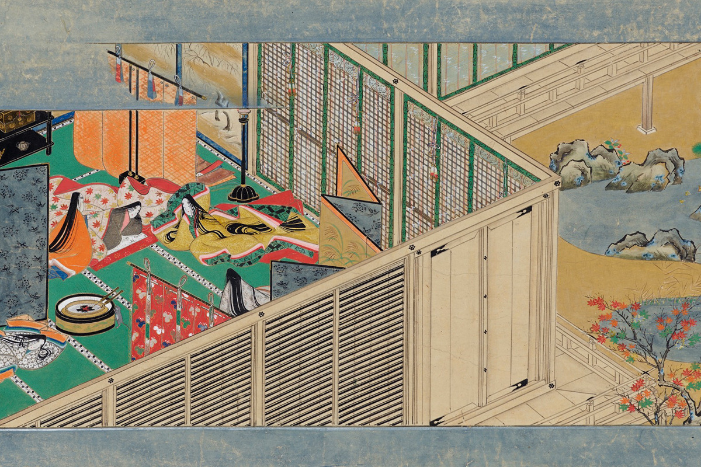
Её главным экспонатом был свиток «Куваноми-дэра энги эмаки» 1532 года, важное культурное достояние Японии. Сига славится как сокровищница свитков эмаки, и этот считается одним из лучших. В нём рассказано, как возник храм Куваноми-дэра на склоне горы Кинугаса, на границе нынешних городов Оми-Хатиман и Хигаси-Оми, и как явился людям его главный образ, будда-целитель Якуси. Свиток принадлежит храму и хранится в Киотском национальном музее.
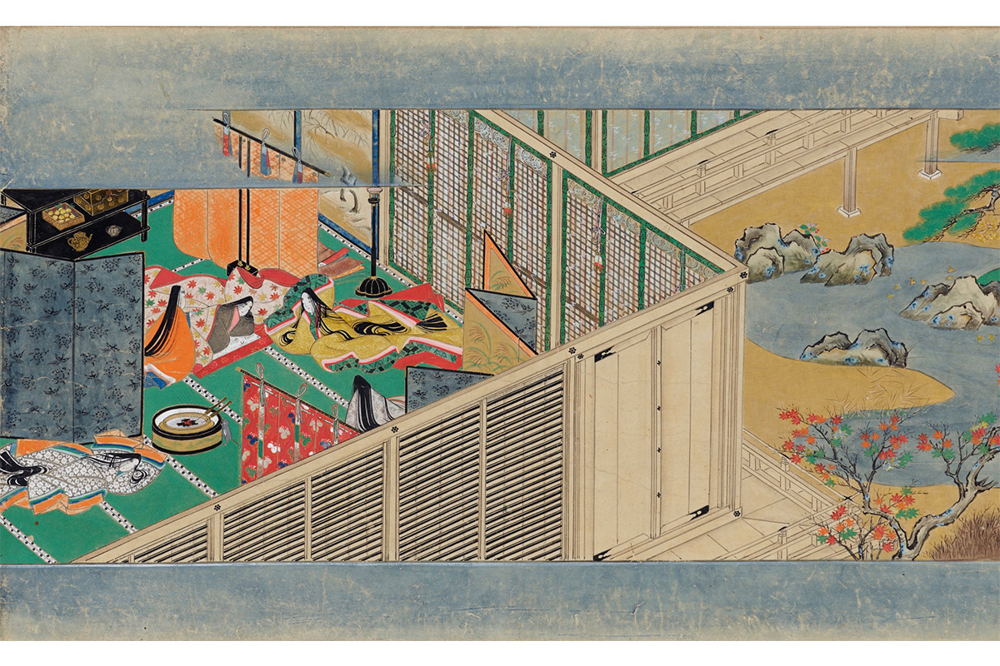
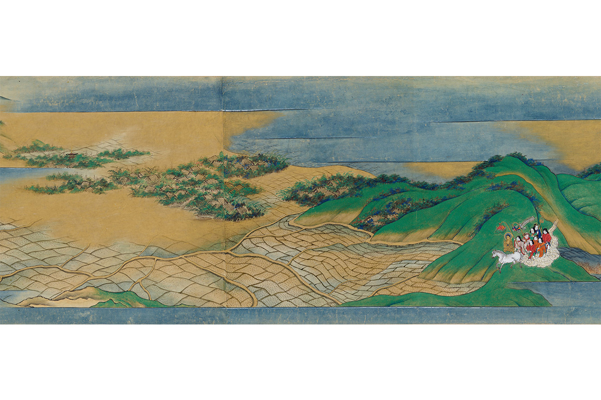
Своё у музея тоже есть. Ширма «Знаменитые места Оми» художников школы Кано, важное культурное достояние, изображает край Оми во второй половине XVI века.
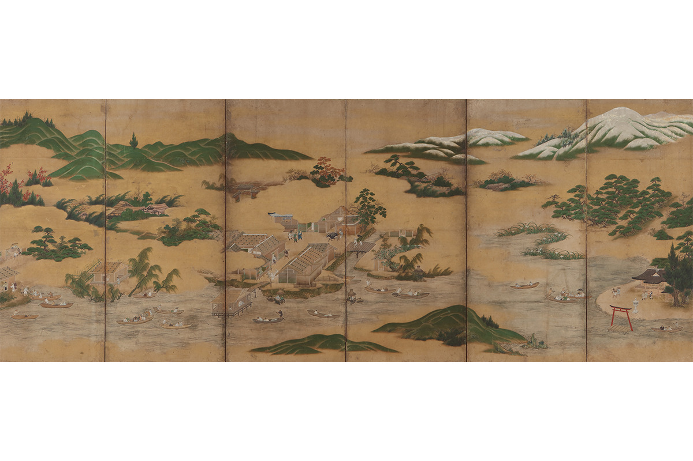
Главная гордость собрания это Юки Огура. Самая полная в стране коллекция её работ охватывает почти сорок лет: от послевоенного «Перевала Сурихари» до поздних цветов.
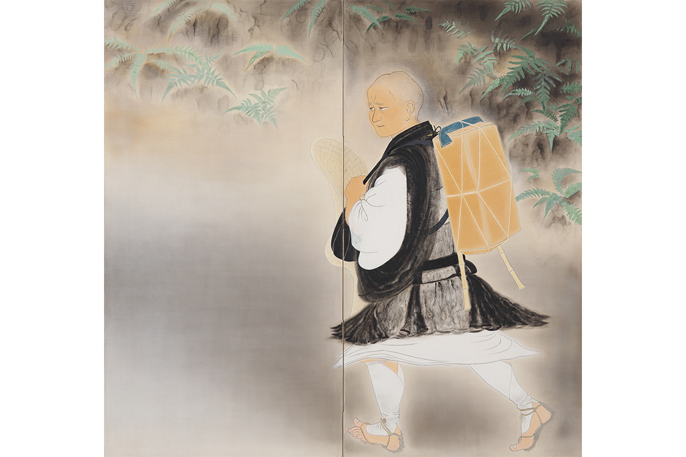
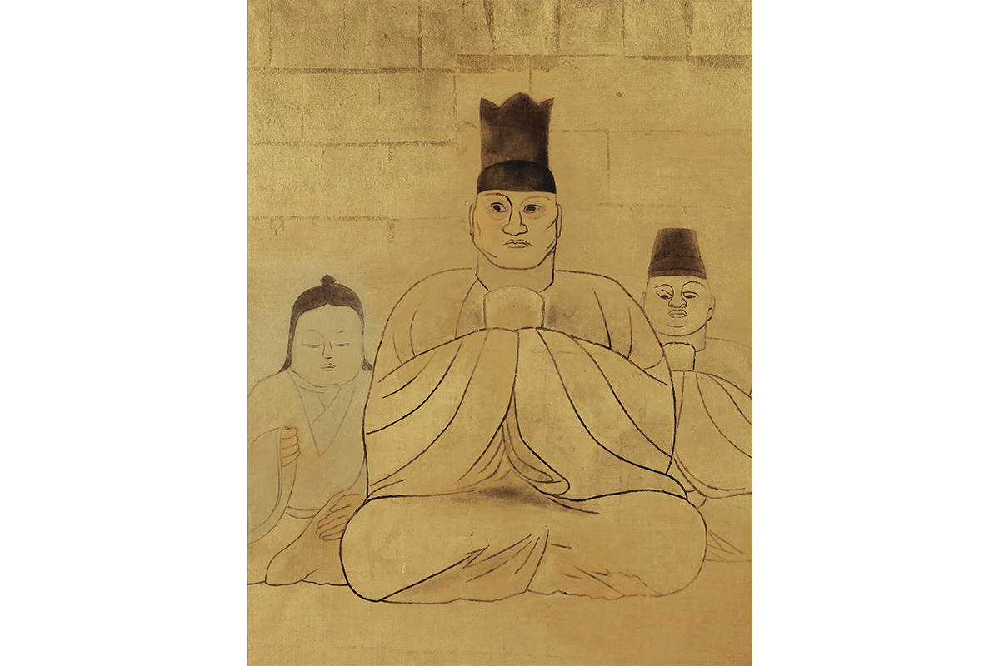
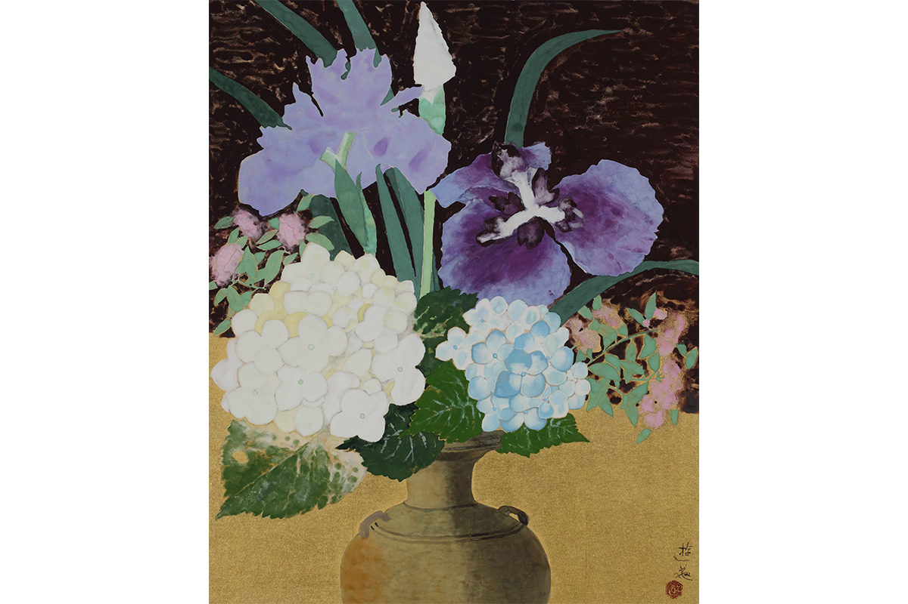
В собрании есть и другие мастера живописи нихонга первой половины XX века. Сюнкё Ямамото написал свиток с даосским раем из старой китайской легенды о рыбаке, который нашёл скрытую долину персиковых деревьев. Кокэй Кобаяси обратился к самой старой японской повести о девушке из стебля бамбука.
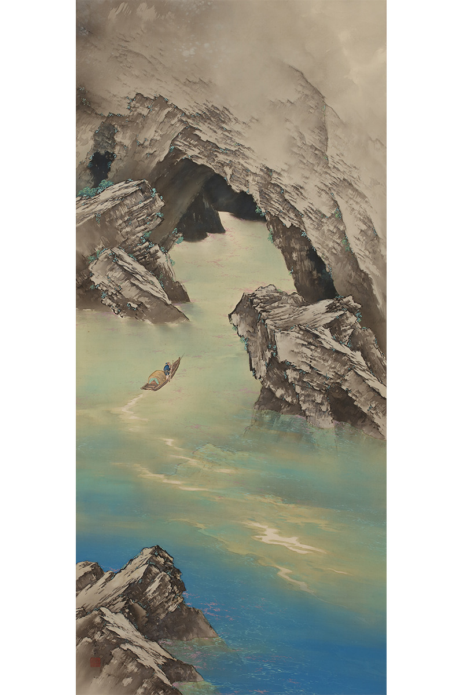
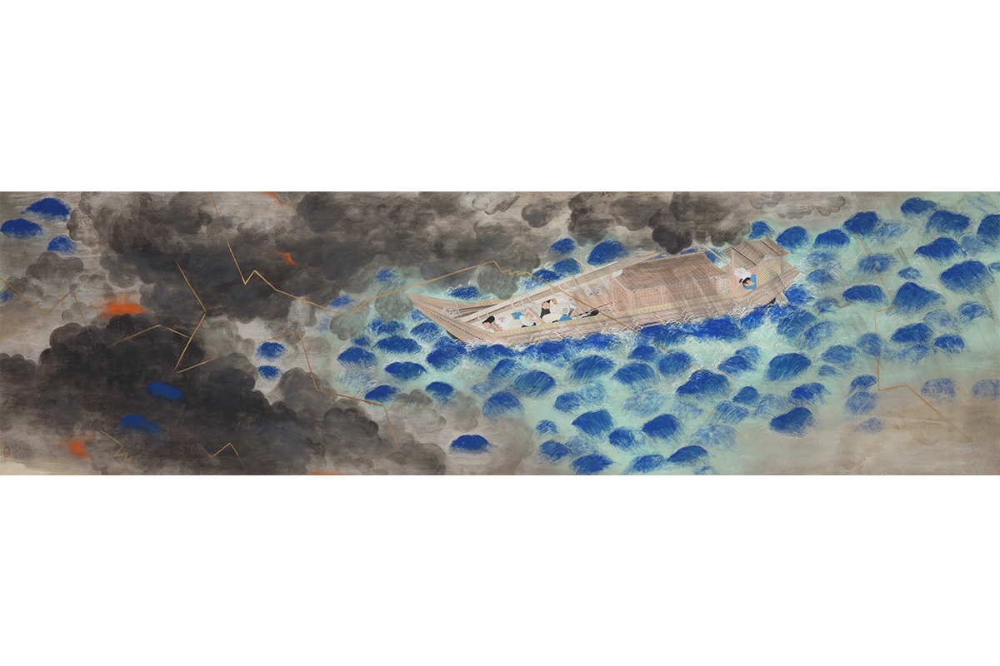
Постоянная экспозиция стоила 540 иен для взрослых и 320 иен для старшеклассников и студентов в 2021 году. Цены на временные выставки зависят от выставки.
Музей искусств префектуры Сига
- Адрес
- префектура Сига, Оцу, Сэта-Минами-Огая-тё, 1740-1
- Телефон
- +81 77-543-2111
- Часы работы
- 9:30–17:00 (вход до 16:30)
- Выходные
- понедельник (если праздник, то следующий день), новогодние каникулы, дни смены экспозиции
- Цены / Вход
- постоянная экспозиция 540 иен, старшеклассники и студенты 320 иен; временные выставки по-разному
- Сайт
- shigamuseum.jp